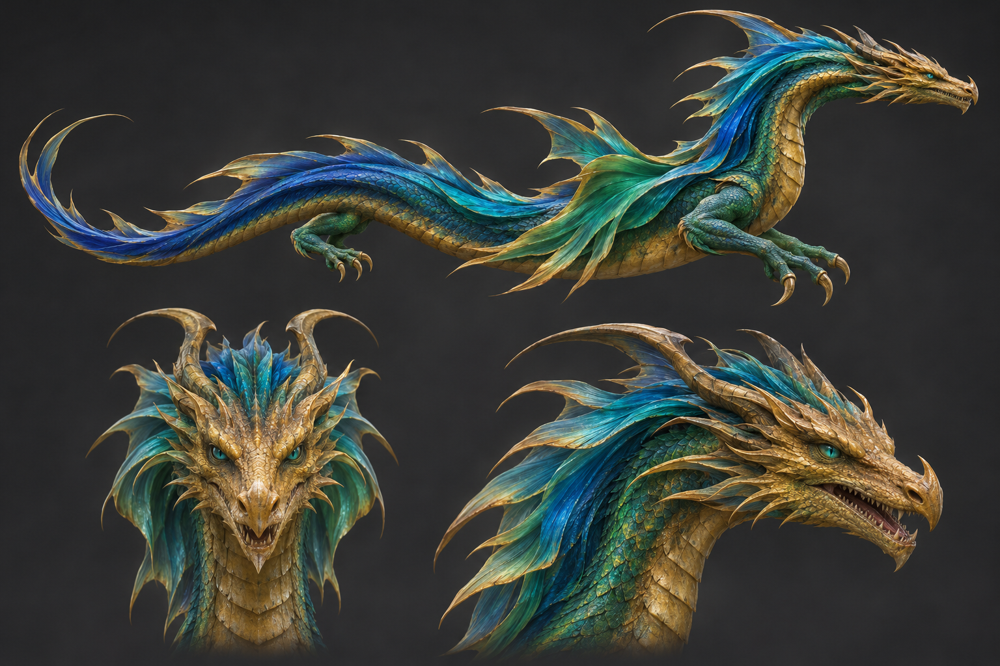

FROM ARTWORK TO FORM
Your dragon.
A new dimension.
A locally authored dragon, developed with free tools. Explore the anatomical surfaces, materials and first spine animation. This is a work in progress towards the approved realistic concept.
Preparing your dragon…
Three-quarter view
Tap dragon to pause/resume · Drag to rotate · Scroll or pinch to zoom
Download 3D model (.glb)APPROVED VISUAL TARGET
The direction.
The work ahead.
This approved concept guides the anatomy, organic scales, thin fins and natural colours. The interactive model above is the current development build.
V5 is an editable Blender anatomy study with a 28-bone spine and a gentle swim loop. It is not yet the film-quality model shown in the concept.
